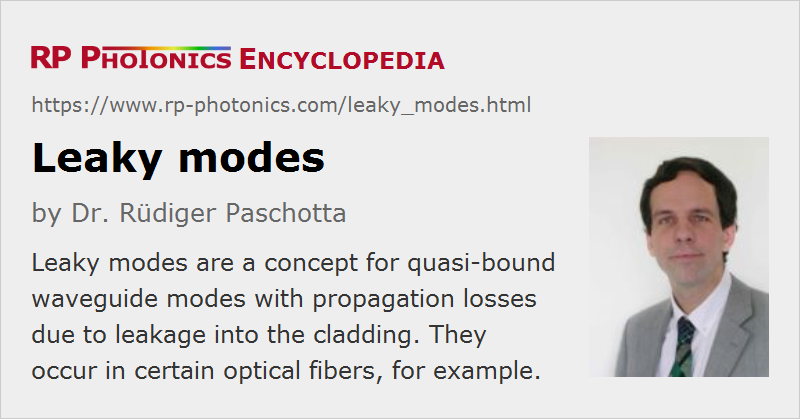

Leaky Modes
Definition: a concept for quasi-bound waveguide modes with propagation losses due to leakage into the cladding
Alternative term: tunneling modes
More general terms: modes
German: Tunnelmoden
Category: fiber optics and waveguides
How to cite the article; suggest additional literature
Author: Dr. Rüdiger Paschotta
In principle, the light injected into a waveguide can be fully decomposed into a set of modes, which are all either guided modes (bound modes) or radiation modes (unbound modes, cladding modes). This approach, however, often does not capture the physics in a satisfactory way, and may also not be mathematically convenient, as a continuum of cladding modes has to be considered. The concept of leaky modes (also called tunneling modes) may then be useful.
This is illustrated in an example case. First, consider a simple step-index fiber, having a fiber core with a somewhat increased refractive index, surrounded by a cladding with a lower refractive index. Figure 1 shows the index profile and the radial functions of the three guided modes, apart from the effective refractive indices of these modes. (The effective index of the LP21 mode is close to the cladding index, which indicates that this mode is close to its mode cut-off.)
Now consider what changes when the refractive index is somewhat increased for radial positions above 20 μm, as illustrated by the dashed line in the figure:
- The fundamental mode (LP01) would hardly be affected at all; essentially, its intensity would decay more slowly where the index becomes higher, but as the intensity in that region has been low already, this is a minor change.
- However, the higher-order modes (LP11 and LP21) would be strongly affected. It is not only that their amplitude distributions have not decayed as much where the region with the raised refractive index starts: also, the modified refractive index in the outer region is now larger than their original effective mode indices. Therefore, their amplitude distributions should actually grow rather than decay in the cladding. In effect, these modes do no longer exist as guided modes.
By simply regarding the fiber as a single-mode fiber, an important physical aspect of the waveguide properties is not recognized. If an amplitude distribution is injected into the fiber which resembles the shape of the original LP11 mode, for example, that light will propagate over some distance in a similar fashion as that LP11 mode of the original fiber, since only a tiny fraction of its optical power probes the region with raised refractive index. One can imagine that this part of the intensity distribution will be shed away from the fiber core and eventually lost (if it is not reflected anywhere). Therefore, we essentially have the behavior of a guided mode, except that it continuously loses some tiny fraction of its power due to radiation into the fiber cladding. Exactly this aspect is behind the concept of leaky modes: one considers the LP11 and LP21 modes to still exist for the fiber with modified index profile, but now as leaky modes and no longer as true guided modes. In the considered example, the LP21 mode would have substantially higher propagation losses than the LP11 mode.
Unfortunately, the concept of leaky modes involves a number of mathematical subtleties, the understanding of which requires a detailed and careful study. For example, the leaky modes are not part of a complete orthogonal system of modes. Nevertheless, the concept can be quite useful both for qualitatively understanding the characteristics of certain waveguides and for doing certain simulations of light propagation in a fiber. As an example for the first aspect, consider a large mode area fiber. A very large effective mode area can be achieved more easily by using a refractive index contrast which is somewhat too large for true single-mode characteristics. However, one can modify the fiber design such that the higher-order modes become leaky modes. (Various methods exists, including some applied in photonic crystal fibers.) One has to keep in mind that these higher-order modes can still carry substantial optical powers over some distance. This would be overlooked if the true guided mode only would be considered. It is also possible to use fibers with leaky modes only (and no true guided modes at all), where however the lowest-order mode has very small propagation losses.
Questions and Comments from Users
Here you can submit questions and comments. As far as they get accepted by the author, they will appear above this paragraph together with the author’s answer. The author will decide on acceptance based on certain criteria. Essentially, the issue must be of sufficiently broad interest.
Please do not enter personal data here; we would otherwise delete it soon. (See also our privacy declaration.) If you wish to receive personal feedback or consultancy from the author, please contact him e.g. via e-mail.
By submitting the information, you give your consent to the potential publication of your inputs on our website according to our rules. (If you later retract your consent, we will delete those inputs.) As your inputs are first reviewed by the author, they may be published with some delay.
Bibliography
| [1] | A. K. Ghatak, “Leaky modes in optical waveguides”, Opt. Quantum Electron. 17 (5), 311 (1985), doi:10.1007/BF00620394 |
| [2] | J. Hu and C. R. Menyuk, “Understanding leaky modes: slab waveguide revisited”, Adv. Opt. Photon. 1, 58 (2009), doi:10.1364/AOP.1.000058 |
| [3] | A. W. Snyder and J. D. Love, Optical Waveguide Theory, Chapman and Hall, London (1983) |
See also: modes, waveguides
and other articles in the category fiber optics and waveguides
|  |
If you like this page, please share the link with your friends and colleagues, e.g. via social media:
These sharing buttons are implemented in a privacy-friendly way!